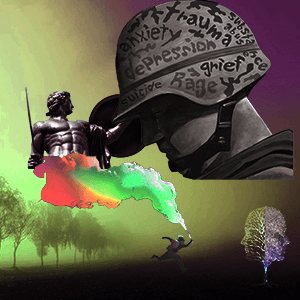
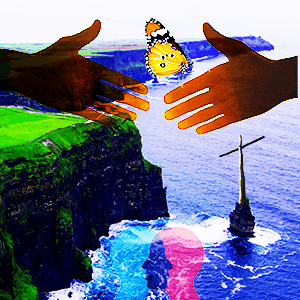

Mind Body & Soul Photoshop Project
Index
My Portfolio
Process Book


This piece is provoked by the intentino to look inward of ones self, and gather images strictly from the web to portray in my own eyes, my mind, body, & spirit, separately onto 3 art boards, respectively. The goal is to use these images to create a meaningful composition and message of ones self, by creating a photo collage of images used. They are all very different and not as cohesive as others might have as a set, but this is accurate in the sense of my own self image.
Speaking ot the mind Art board, this is probably the most dramatic scene of the 3. The background is an eery setting with a repeating tree line, that might seem to go on forever. This setting is sort of supposed to convey a “battleground” of the mind. There is a special tree to the right, that is two faced, one side alive one side dead. The dead side is the half of my mind that is desensitized by war at a young age. The boy running with the sort of colorful smoke, is symbolizing the more positive side of my mind, that is constantly running for grasp of the “greener side”. Without him, there is no effort. Hanging over head, are the emotions of a soldier plastered on his helmet with his head hung, this is PTSD in a nutshell. PTSD, is being fended off by the strong or resilient side of my mind, the sculpture with sword & shield, that never falters. If he does, there is no survival in this world.
Speaking to the body dartboard, bamboo signifies strength, toughness, and plentiful uses. “Bill the Butcher” from the movie “Gangs of New York”, is included to portray the sort of 0-100 aspect of my personality, the seasoned and well experienced warrior with an intense demeanor. The american flag sits atop his head, giving notion to my patriotism, and the fact it is attached to Bill in the image, is a nod that I embody the flag for more than a symbol. It is something I have fought, and nearly died for many times. The background is seen with a giant torn apart boat, symbolic of my weathered body that has undergone countless traumatic events over time. Then you have a small box man holding a torn heart that is torn in half, this is a message to show the pain of losing people, and myself at times.
Speaking to the Spirit Art Board, outreached hands show the need and love of kindness, friendship, and acceptance toward all human beings. They are enlightened at the fingertips to show energy being transferred from one person to another, and on top, sits a butterfly. This is showing growth & the stages of my spirituality that all endure when figuring out faith for themselves. My mind is ever evolving, like a butterfly. At the bottom sits intertwined faces, this resembles my interpersonal aspect and senses I share with human beings, whether I have known them for years, or seconds. I feel that I somewhat understand them and easily sympathize with folks on an extremely emotional leve, based off small cues, energy, and ESP sort of senses. The cross is a direct symbol of my belief in god, and the setting is a backdrop of Ireland-Like drop off to the sea, a view I have always found most peaceful and soothing to the soul.